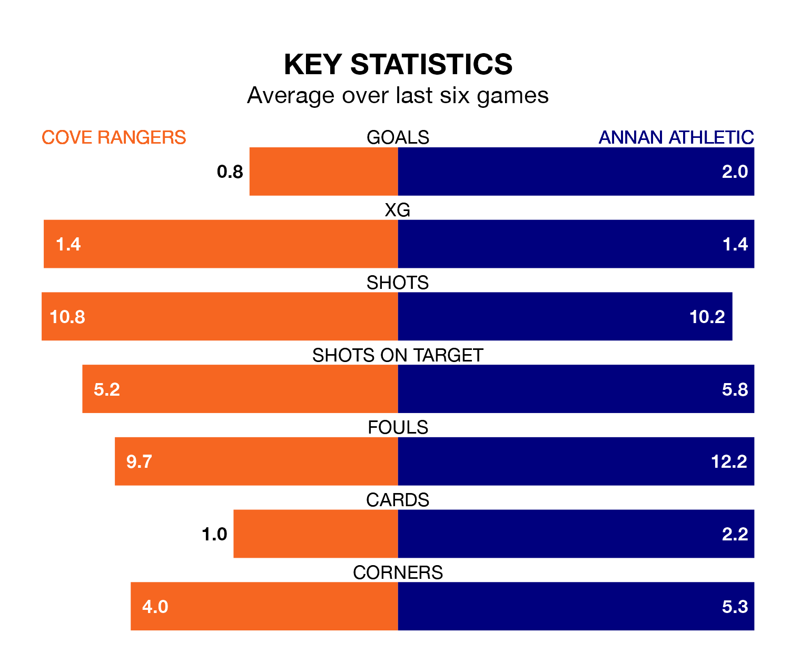

Struggling Annan Athletic face Cove Rangers away at the Balmoral Stadium on Saturday looking to build on a win in their last league outing.
After securing all three points with a 2-1 victory over Stirling Albion on February 17, the Galabankies sit ninth in League One.
They travel to play a Cove side fifth in the standings, who lost in their last match, 4-1 against Alloa Athletic.
In Rumarn Burrell, Cove have the league's most on-form striker so far this season. He has notched 18 goals in 24 appearances.
His goal rate of one every 115 minutes is quicker than that of Thomas Goss, Annan's top scorer with a goal every 203 minutes, and a total of eight goals in 21 games.
With 35 goals in 25 games so far this season, Athletic are scoring at below the league average rate with 1.4 goals per game. And they are conceding more than average, letting in 50 goals at a rate of 2.0 per game.
Rangers, meanwhile, are average scorers, with 1.6 goals per game. They have conceded 1.5 goals per game.
The Wee Rangers are in terrible form in League One, with no wins and two draws from their last six games.
With three wins and a draw over that period, the Galabankies' form is much better – they have taken 10 points from 18, compared to the hosts' two.
In the last five years, Cove and Annan have played each other on five occasions. Cove won four of them and Annan one.
On average, the Wee Rangers scored 2.4 goals and the Galabankies 1.8 in those matches.
Their last meeting was on December 9, when Cove won 3-1 away.
Updated: 12:18 (UTC), 19/02/24